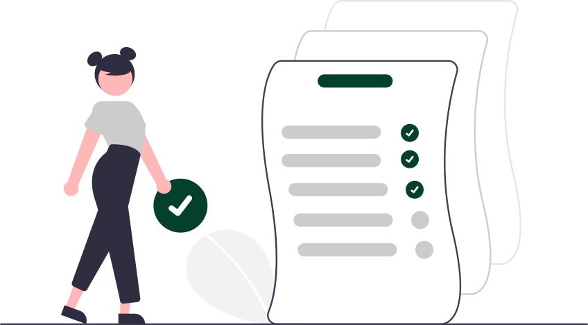

<div class="task-management-wrapper">
  <ww-page-title-bar
    pageTitle="Task Management"
    buttonText="Create Task"
    iconName="add"
    (buttonPressed)="createTask()"
  ></ww-page-title-bar>

  <ww-create-task
    *ngIf="showCreateTask"
    (closeDialog)="closeDialog($event)"
    [taskDetails]="selectedTask"
  ></ww-create-task>

  <div class="content-container">
    <table
      mat-table
      [dataSource]="tasks"
      matSort
      class="table-container"
      *ngIf="tasks.data.length > 0 && !isLoading"
    >
      <!-- Title Column -->
      <ng-container matColumnDef="title">
        <th mat-header-cell *matHeaderCellDef mat-sort-header>Title</th>
        <td mat-cell *matCellDef="let task">{{ task.title }}</td>
      </ng-container>

      <!-- Description Column -->
      <ng-container matColumnDef="description">
        <th mat-header-cell *matHeaderCellDef mat-sort-header>Description</th>
        <td mat-cell *matCellDef="let task">{{ task.description }}</td>
      </ng-container>

      <!-- Start Date Column -->
      <ng-container matColumnDef="start_date">
        <th mat-header-cell *matHeaderCellDef mat-sort-header>Start Date</th>
        <td mat-cell *matCellDef="let task">{{ task.start_date | date }}</td>
      </ng-container>

      <!-- End Date Column -->
      <ng-container matColumnDef="end_date">
        <th mat-header-cell *matHeaderCellDef mat-sort-header>End Date</th>
        <td mat-cell *matCellDef="let task">{{ task.end_date | date }}</td>
      </ng-container>

      <!-- Status Column -->
      <ng-container matColumnDef="status">
        <th mat-header-cell *matHeaderCellDef mat-sort-header>Status</th>
        <td mat-cell *matCellDef="let task">{{ task.status }}</td>
      </ng-container>

      <!-- Priority Column -->
      <ng-container matColumnDef="priority">
        <th mat-header-cell *matHeaderCellDef mat-sort-header>Priority</th>
        <td mat-cell *matCellDef="let task">{{ task.priority }}</td>
      </ng-container>

      <!-- Actions Column -->
      <ng-container matColumnDef="actions">
        <th mat-header-cell *matHeaderCellDef></th>
        <td mat-cell *matCellDef="let task">
          <button mat-icon-button (click)="editTask(task)" color="primary">
            <mat-icon>edit</mat-icon>
          </button>
          <button mat-icon-button (click)="deleteTask(task)" color="warn">
            <mat-icon>delete</mat-icon>
          </button>
        </td>
      </ng-container>

      <tr mat-header-row *matHeaderRowDef="displayedColumns; sticky: true"></tr>
      <tr mat-row *matRowDef="let row; columns: displayedColumns"></tr>
    </table>
    <div
      class="no-tasks-container"
      *ngIf="tasks.data.length === 0 && !isLoading"
    >
      
      <div class="no-task-text">
        Looks like your task list is empty! <br />Click on the 'Create Task'
        button above and add some tasks to get started.
      </div>
    </div>
    <ww-page-loader loadingText="Loading Tasks..." *ngIf="isLoading" />
  </div>

  <ng-template #deleteConfirmationDialog>
    <h2 matDialogTitle>Confirm?</h2>
    <mat-dialog-content>
      <p>Are you sure you want to delete the task?</p>
    </mat-dialog-content>
    <mat-dialog-actions align="end">
      <button mat-button matDialogClose color="primary">Dismiss</button>
      <button
        mat-raised-button
        color="primary"
        [disabled]="isDeleteLoading"
        (click)="deleteTaskApiCall()"
      >
        <mat-spinner
          *ngIf="isDeleteLoading"
          diameter="20"
          strokeWidth="3"
        ></mat-spinner>
        <span *ngIf="!isDeleteLoading">Delete</span>
      </button>
    </mat-dialog-actions>
  </ng-template>
</div>
